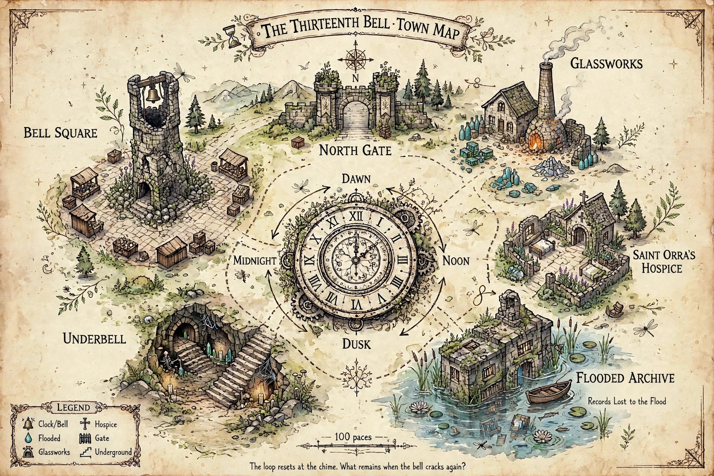

Ready to enter Bellweather
A solo time-loop adventure
The 13th Bell
Bellweather is awake, and so is the tower. Walk the town, meet its people, and let each return reshape the day.
Dawn7:00
Noon12:00
Dusk18:20
Midnight13th bell
13
Find what the tower is pulling from the town.Choose a district. Each visit advances the clock; at midnight, the town returns changed.
Companion layerThe screen handles schedules, compression, and consequences. The tabletop kit keeps the clue cards, hidden envelopes, and debate at the table.
People × phase ledger
Plan from patterns, not waypoints.Prediction · before the next bell
What changes by noon?
Read the schedule, then commit before you travel.
Undeclared
Where do you go?
Each district holds an activity, not an answer.
Three visits before midnight.

Loop I · The ordinary morning
Red: new activity · Green: visited this loop
Bell Square · before Noon
Auction stalls→Sheltered market well